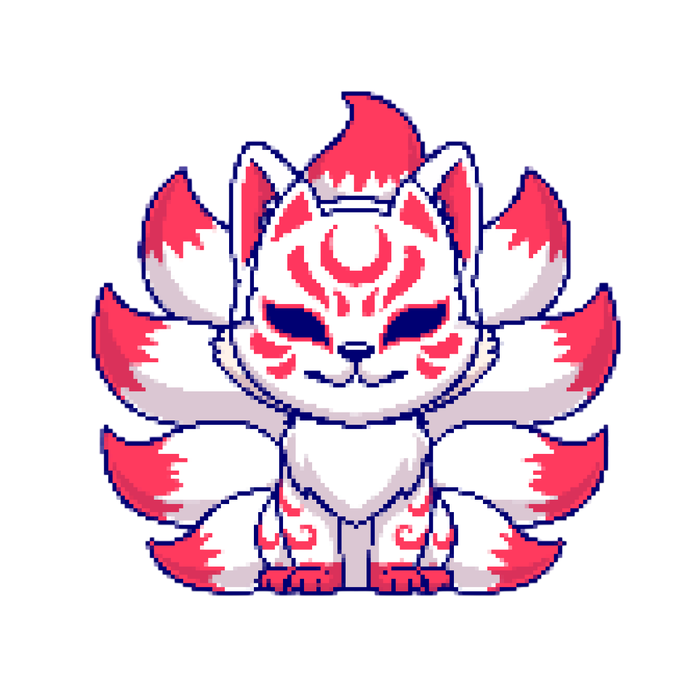

Job Detail
KitsuneSoft
Game Developer
Game Developer
Company Name: KitsuneSoft Game Studio
Location: Jl. Contoh No. 123, Jakarta
Category: Game Development
Job Description:
- Creating the art pipeline and guiding the artists to ensure the pipeline is followed thoroughly.
- Asset integration and optimization in the game engine.
- Working with artists to create custom shaders that enhance visual effects (such as lighting, water, or surface properties) while ensuring they are optimized.
- Debugging and solving art-related technical issues, such as performance drops or visual glitches in the game engine.
- Identifying and resolving technical issues between the art and programming departments.
- Creating and maintaining technical art pipeline and guide documentation.
- Ensuring that art assets meet the quality standards for visual fidelity, aesthetic consistency, and technical compatibility across platforms.
Requirements:
- Expertise in Game Engine Tools: Unity, Unreal, and VR game engines.
- Expertise in 3D Tools: 3Ds Max, ZBrush, Maya, Blender, Cinema 4D.
- Excellent professional English skills.
- Excellent ability to communicate technical terms and information to all project stakeholders.
- Proficiency in 3D Modeling, Texturing, Shading, Lighting, Rendering, Skinning, Rigging, VFX, and Animation.
Job Type: Full-time
Salary: Rp 10,000,000 - Rp 15,000,000
Apply Now